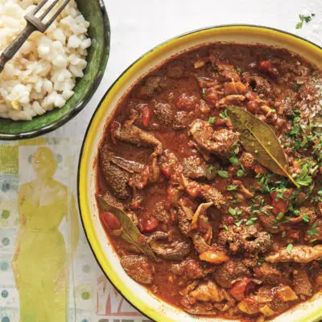

Mala mogodu/ ulusu

Description
Mogodu is a Southern African food. Mogodu is a combination of chopped serobe (tripe) and mala (intestines) served as a stew often with hot pap or dumpling. Mala (in Setswana/Sotho) is the insides, usually of a mammal such as a cow or sheep.
Ingredients
- 1 kg tripe
- coarse salt, for sprinkling and soaking
- 4 litres water
- salt and pepper, to taste
- 4 T ghee or vegetable oil
- 1 medium onion, roughly chopped
- 1 large red chilli, finely chopped
- 1 t garlic, crushed
- 2 t garam masala
- 1 t paprika
- 2 bay leaves
- 1 x 400 g can chopped tomatoes
- 1 cup amasi or plain yoghurt, for serving
- 2 t parsley, chopped, to garnish
Steps
- Place the tripe in a large bowl.
- Sprinkle coarse salt all over the tripe and add half the water.
- Soak for about an hour, then rinse thoroughly under cold, running water.
- Cut the tripe into bite-sized pieces and place in a large saucepan with a lid. Season with salt and pepper and add the remaining water.
- Slowly bring it to a boil over a low heat and cook for 3 hours or until tender. Drain and set aside.
- Heat the ghee or oil in a large pan or skillet.
- Stir in the onion, chilli and garlic.
- Add the masala, paprika and bay leaves. Season with salt and pepper, and stir through while cooking over low heat until the onion is cooked.
- Add the tomatoes, stir through, and cook for 2 minutes.
- Add the amasi or yoghurt and stir through.The sauce should be thick by now, if not, cook over low heat until reduced.
- Add the tripe and cook for about 10 minutes in the sauce.
- Garnish with fresh parsley and serve with a starch of your choice.